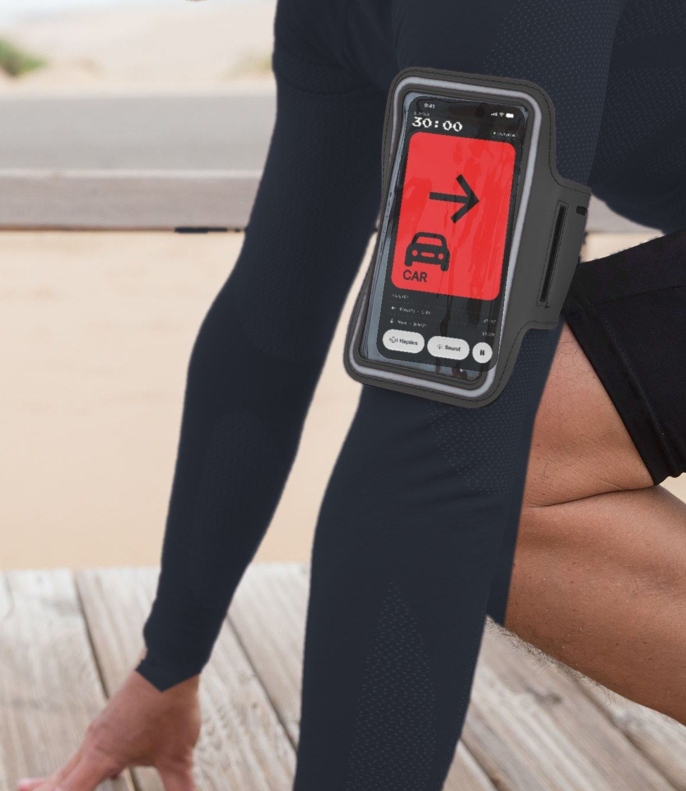
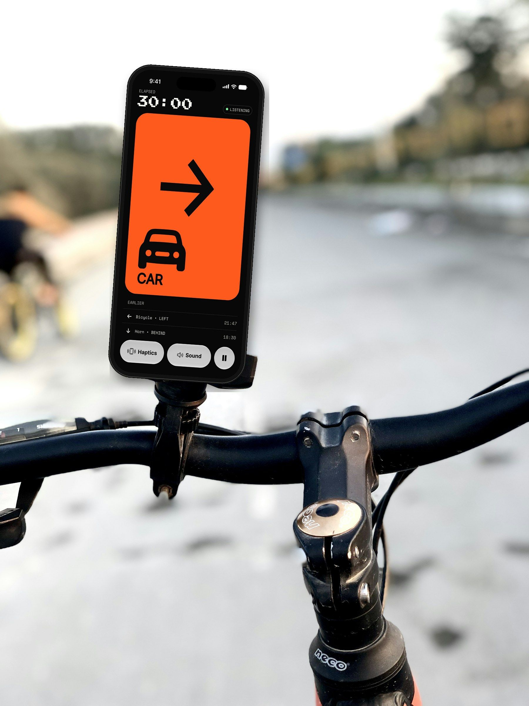
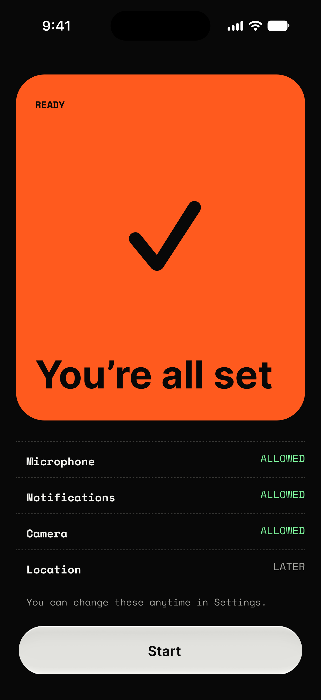
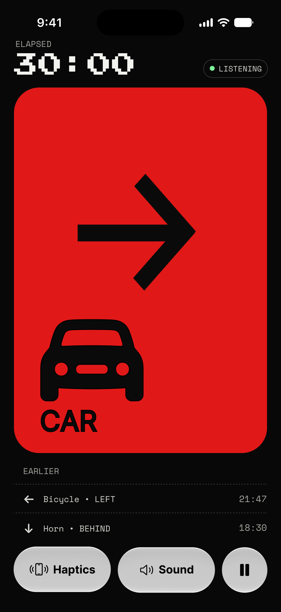

Alerta
Know what's coming, and from where. Alerta listens for cars, bikes, horns and your name, shows where each sound is coming from, and taps you through your iPhone. Built for Deaf and hard-of-hearing runners and cyclists.

The brief
How do runners and cyclists who can't rely on hearing stay safe and aware in public spaces?
That was the one question we started with. On a road, most warnings arrive as sound: a horn, a bell, a siren, someone calling your name. Alerta listens for them, works out what each one is and which way it's coming from, and turns it into cues you can feel and see. A tap grows stronger as the sound gets closer, and an alert shows what it is and where.
The car you can't hear
A cyclist rides at the edge of a road. A car is closing in, four metres behind on the left.
| Without Alerta | With Alerta |
|---|---|
| Nothing tells you. | The phone taps twice and shows the car, how close it is and which side: car, behind left, 4 m. |

Three steps, one screen
Set it going before you head out. After that there is nothing to watch or tap; it comes to you.
- 01
Tap StartNo account needed. When Home says you're all set, one button starts your run or ride.
- 02
Pocket it, mic outA three-second countdown gives you time to pocket the phone face-out or hold it. The microphones stay uncovered.
- 03
Feel it, then see itThe iPhone taps, harder as a sound gets closer. One glance shows what it is and where it's coming from.
It hears the road, and the people on it
Thirteen sounds, each placed around you and graded far, close or very close
People
- Someone called you: add your name in the app, and you feel it and see which side
- Someone warned you: shouted warnings like "watch out" or "careful" are always a high alert
- Shout
- Scream (always urgent)
Traffic & more
- Vehicle: cars, vans, trucks, buses and motorbikes
- Horn
- Siren (always urgent)
- Bicycle, including bells
- Reversing vehicle
- Skidding (always urgent)
- Train (always urgent)
- Dog
When it can't name it
- Something approaching: with the screen off it can't always name the sound, but it still says something is getting closer
Closer means stronger
A different rhythm for each distance, so you can tell how near a car is without looking.
| Distance | Pattern | Strength |
|---|---|---|
| Far | Heartbeat: a double beat | 30% |
| Close | Rapid: quick taps | 50% |
| Very close | S.O.S.: 3 short, 3 long, 3 short | 90% |
People who prefer their own pattern can record it in the app. Haptics play even on silent, and keep going with the screen off and the phone pocketed. A Live Activity shows what and where on the Lock Screen. Apple Watch support is coming, so alerts can tap the wrist when the phone is out of reach.
Screens
From alerta.id


Private by design
An app that listens all the time should say exactly what happens to what it hears.
| Microphone | All audio is analysed on the iPhone. Nothing is recorded or uploaded. |
|---|---|
| Your name & warnings | Speech is recognised on the iPhone only. Nothing is recorded or sent anywhere. |
| Sign-in | Continue as a guest. Sign in with Apple only to sync sessions. |
| Notifications | Only for hazards. Nothing promotional, ever. |
| Location | Used only while a session runs, to save the route on the iPhone and show where each alert happened. |
An extra signal, not a promise
Alerta can miss a sound: wind, loud music or a covered microphone can hide one, so it's an extra signal, not a replacement for looking around. It uses more battery than a usual workout app because it's always listening, and the team is measuring it to publish real numbers. Direction comes from the spatial microphones on iPhone 16 and newer, which is why those are the phones it supports.
Alerta is out now, and it isn't finished. We want to keep shaping it with the people it's for: what it should listen for, how strong the taps should feel, and what it gets wrong.
The team
Made by six people at the Apple Developer Academy in Bali, 2026.
- Design
- Andi Naufal, Alan Frederick, Keiko Serah, Gloria Kesita
- Engineering
- Wahyu Kurniawan, Vincent Gunawan
- Ex-members
- Dimas Nugraha, Risky Insania Ramadhani (engineering); Natchaya Futragoon (design)
- Mentors
- Joe Sibayan, Head of Apple Developer Academy Bali; John Keating, Design Mentor; Antonio Palomba, Tech Mentor